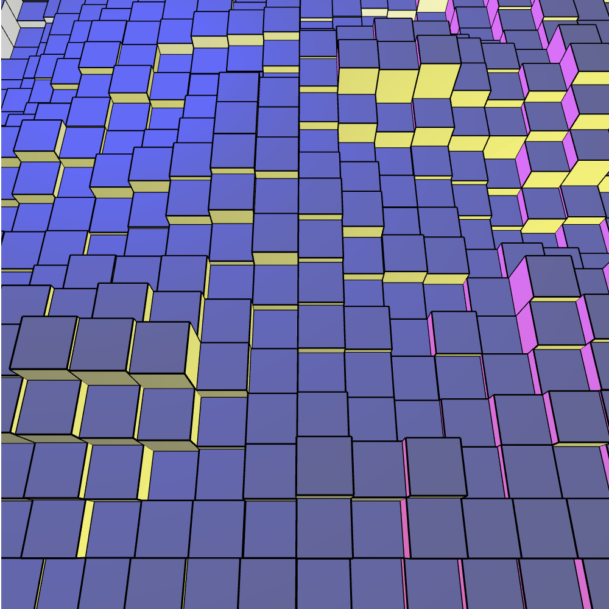
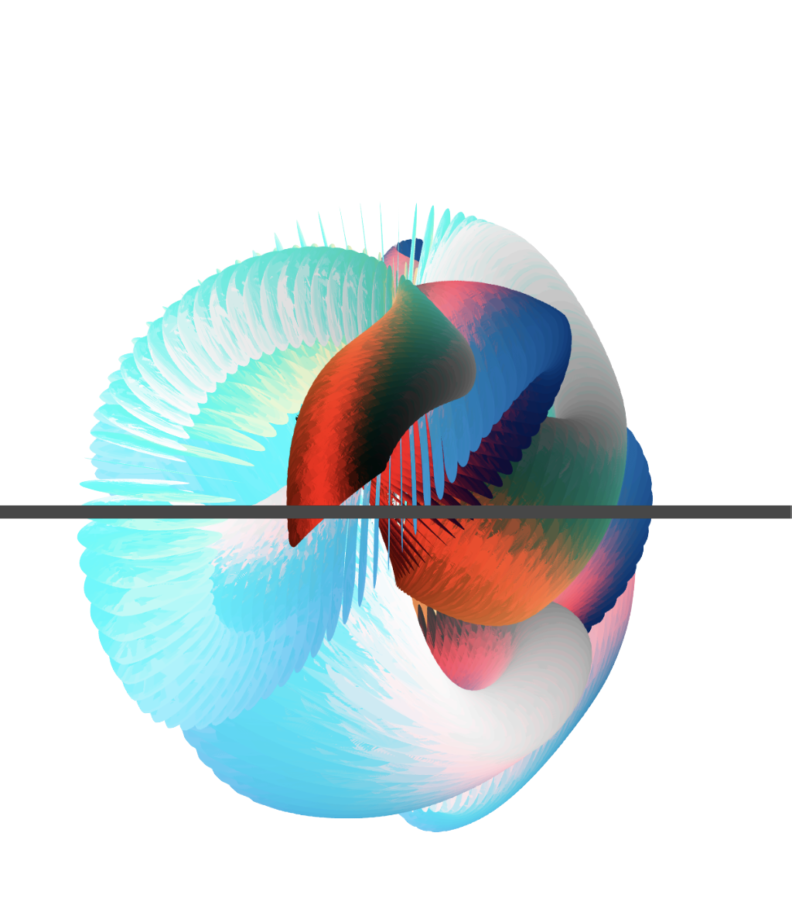
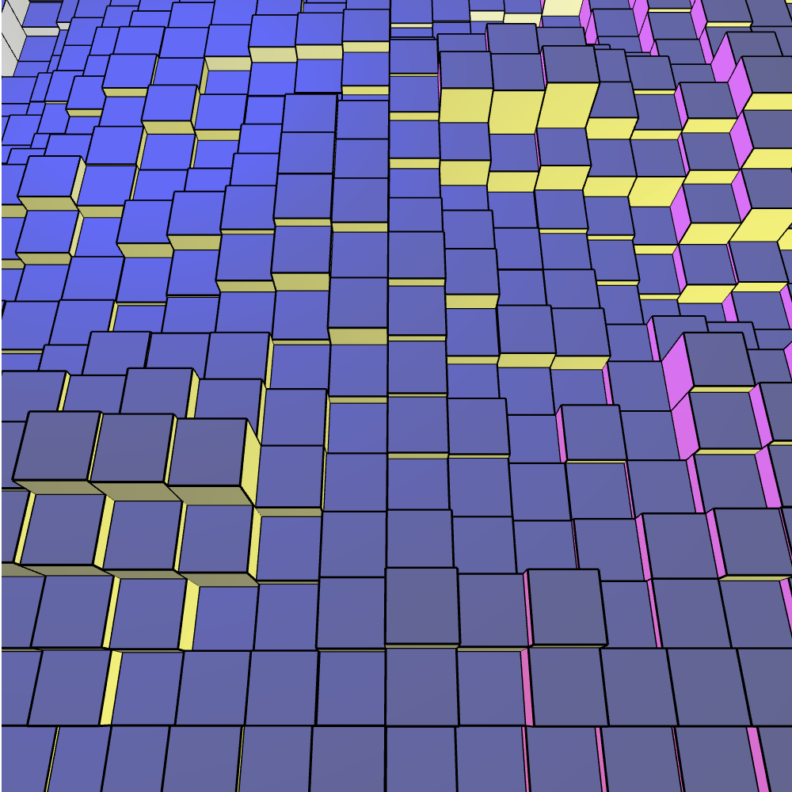
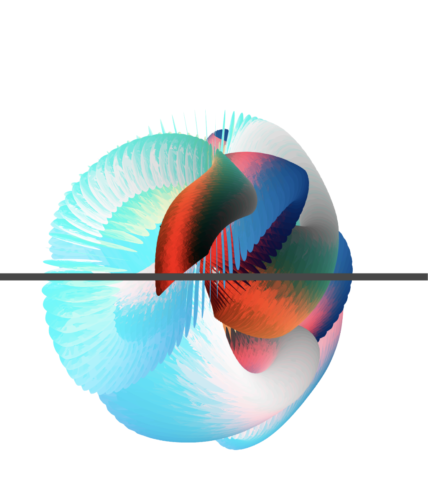

"Saturation" is an interactive digital art installation that combines creative coding with various tools and technologies, including p5.js, ML5 for skeleton and face tracking, live camera and mic data, Maptastic, Procreate, Photoshop, Premiere Pro, and multiple AI image generation softwares. This piece explores the theme of triggering specific physical reactions, balancing hyper-engagement with overstimulation. It reflects my personal experience in a rapidly advancing world, capturing both amazement and discomfort.

ML5 posenet skeleton tracking and face tracking: ML5 posenet is a library that can be used to track the skeleton and face of a person in real time. I am using ML5 posenet to track the movements audience members, mapping out their hands, elbows, shoulders and faces. If either hand or face touches a coloured circle, the background colour changes to the respective colour.
The digital mockup of the printed RGB effect. The visuals themselves are intertwined, hand drawn, AI, photoshop tweaked, pen on paper meets ipad with it all being indistinguishable to the audience.

Here is a link to the Annual art exhibition page.